Potter Creek Cave and Samwel Cave, Shasta County, California — the Pleistocene fossil caves excavated by John C. Merriam (1903–06). Built to scale from W. J. Sinclair (1904) and Furlong (1906) / Feranec et al. (2007). Each scene opens as a cut-away section in X_ITE. Drag to orbit. Documented geometry vs. interpretive dressing is noted in every scene's caption.
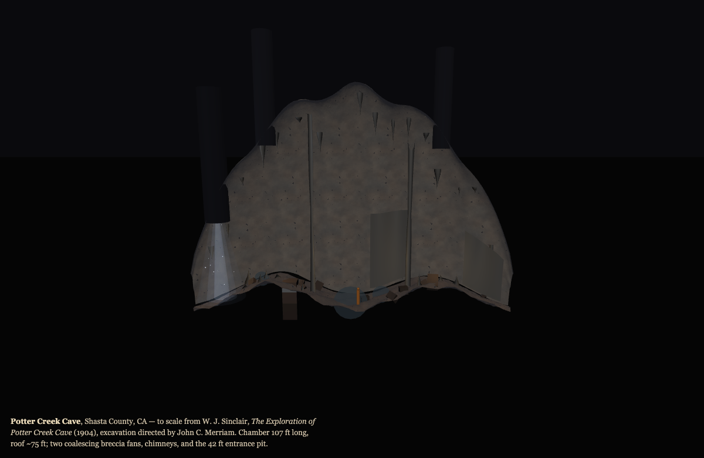
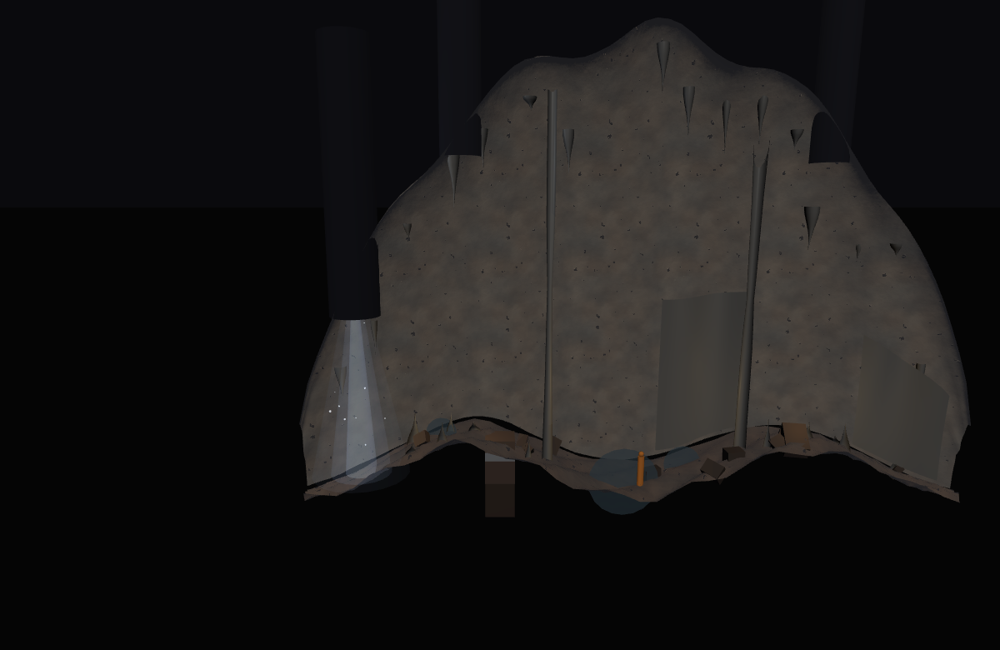
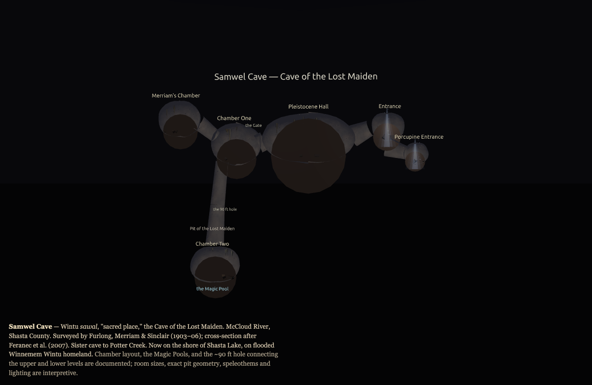
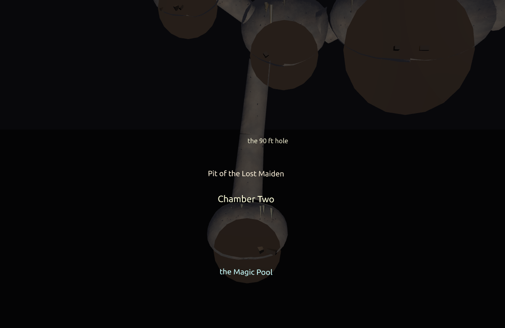
Faithful vector traces of the original survey drawings, and the surveyed geometry rebuilt to scale — the measured counterpart to the reconstructions above.
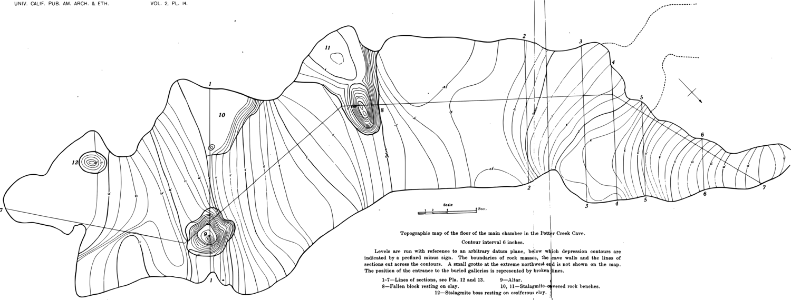
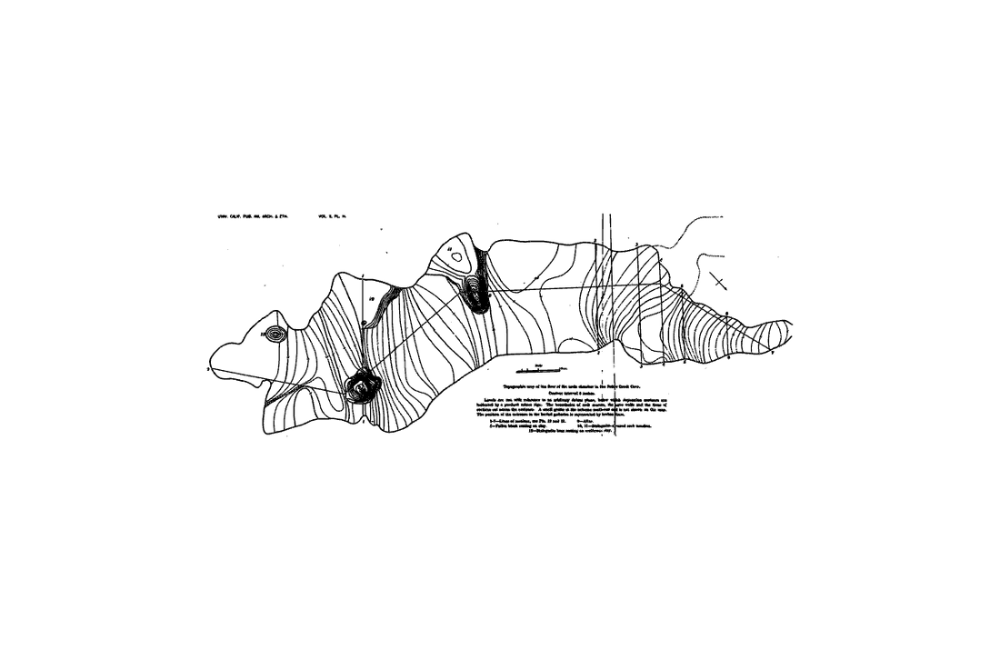
IndexedLineSet —
the model is the survey, navigable in 3-D.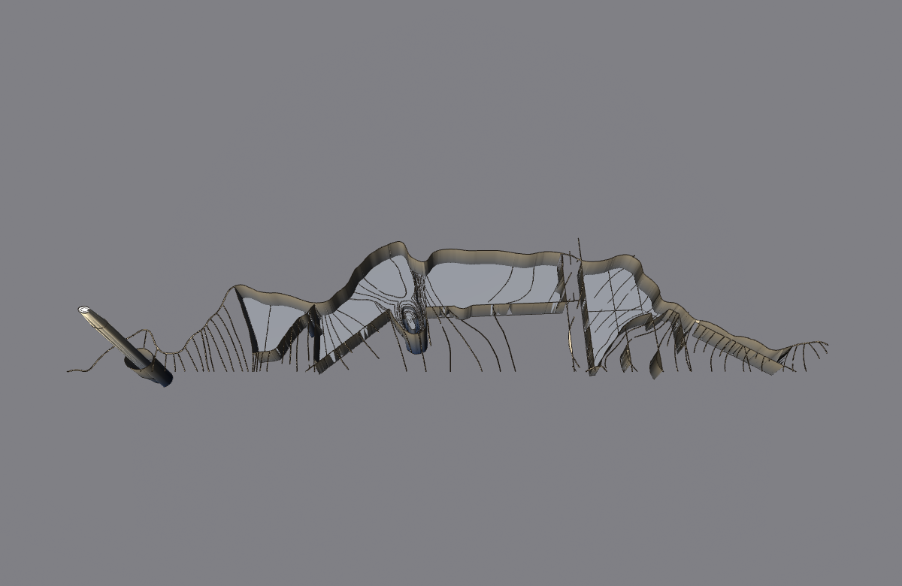
The Pleistocene megafauna Merriam dug from these caves — each one a faithful trace of its real published anatomical drawing, fully cited. No AI imagery; where only photographs exist (Arctodus), nothing is invented.
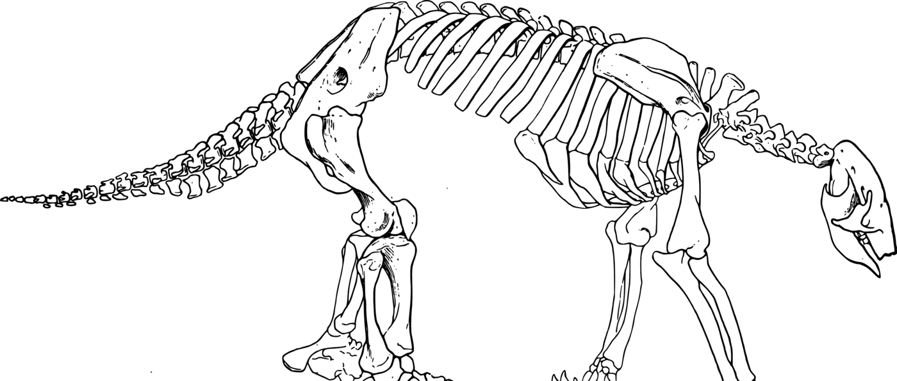
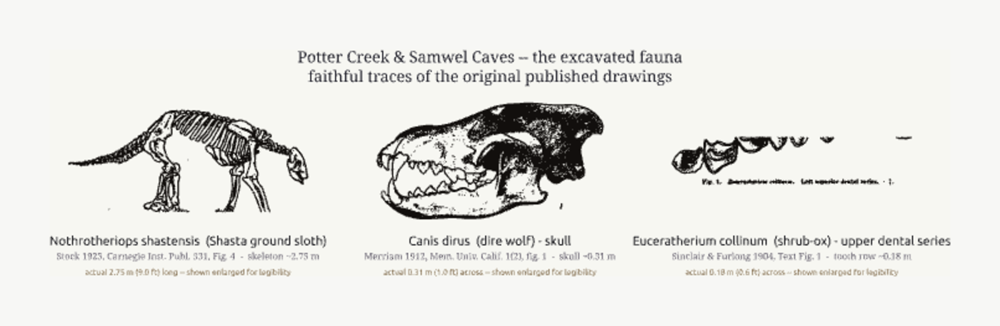
The hybrid: the documented stratigraphic column with the fauna pinned only where the literature records a depth — and the rest honestly shown as the mixed assemblage Sinclair refused to split by layer. Every claim is cited; the one interpretive figure is flagged as such.
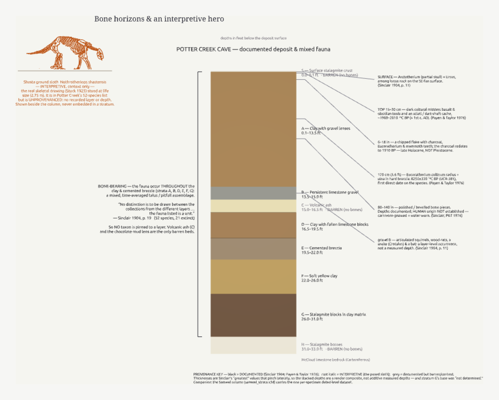
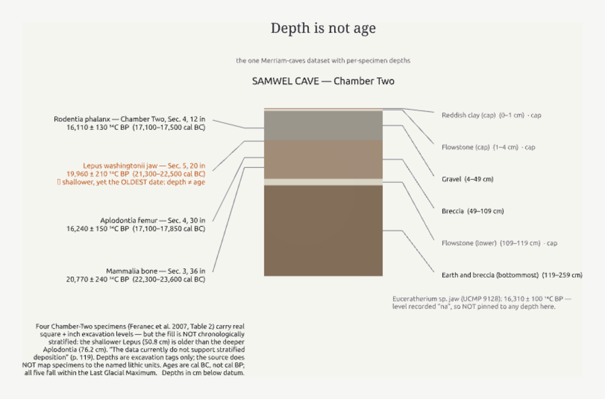
Started with ./start_caves.sh (serves this folder on
127.0.0.1:8099). The X3DOM pages (*_x3dom.html /
potter_creek_cave.html) also open directly in a browser, but X_ITE
is the faithful renderer for the PBR materials. Both caves are Winnemem Wintu
sacred sites on the flooded McCloud River; treated with care, not as scenery.